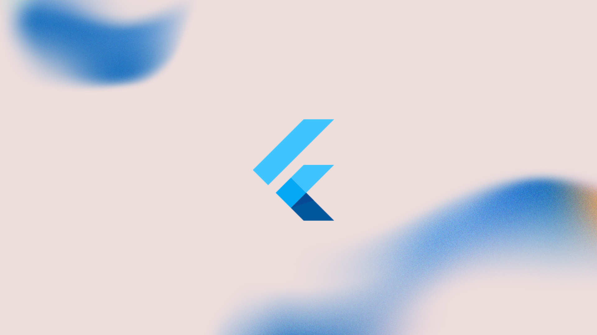
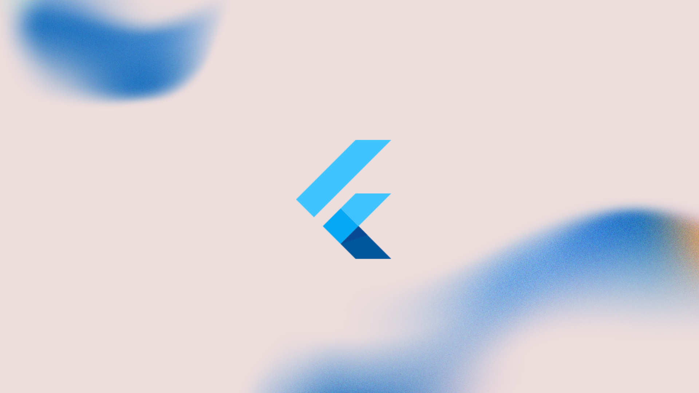

About Project
VoiceCare is an innovative mobile healthcare application I developed to support visually impaired individuals in managing their healthcare needs independently. The system leverages voice technology to remove visual barriers, allowing users to perform essential tasks such as registration, login, and appointment booking entirely through Speech-to-Text (STT) and Text-to-Speech (TTS) interaction. Built with Flutter and powered by Firebase Cloud Services, VoiceCare provides secure authentication, real-time data storage, and seamless synchronization between user and admin functions. The project focuses on accessibility-first design, featuring audio prompts, glowing focus indicators, and intelligent voice feedback to ensure a fully navigable experience without sight. By bridging healthcare and assistive technology, VoiceCare not only enhances digital inclusion but also aligns with the principles of universal design and equal access proving that technology can empower independence, dignity, and confidence for visually impaired users.
Showcase
Embedding may be disabled — Watch on YouTube